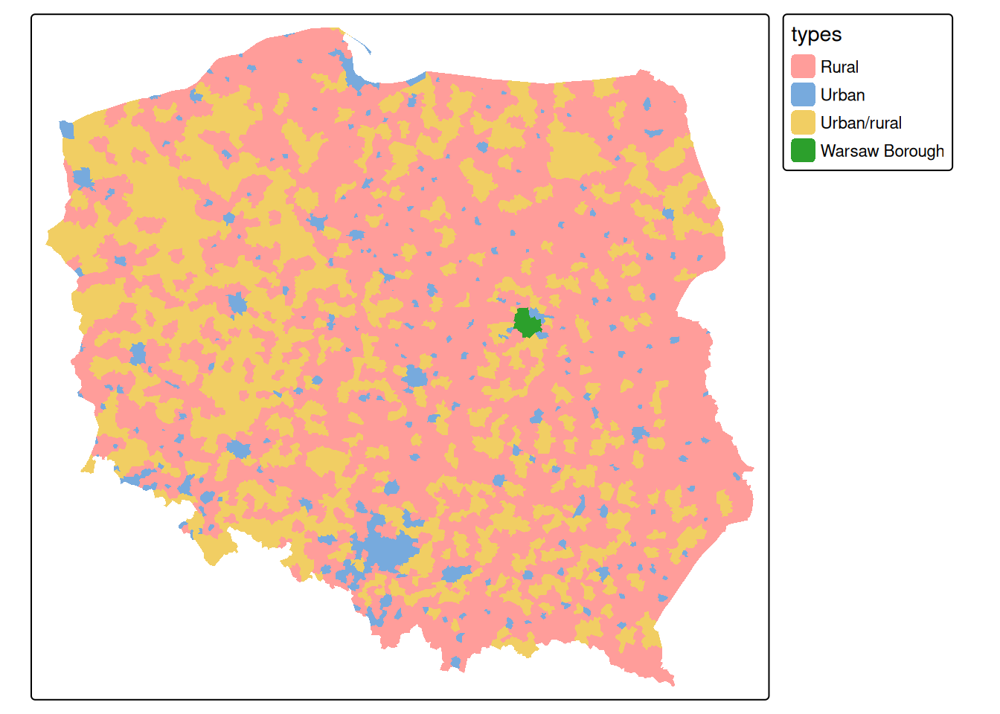
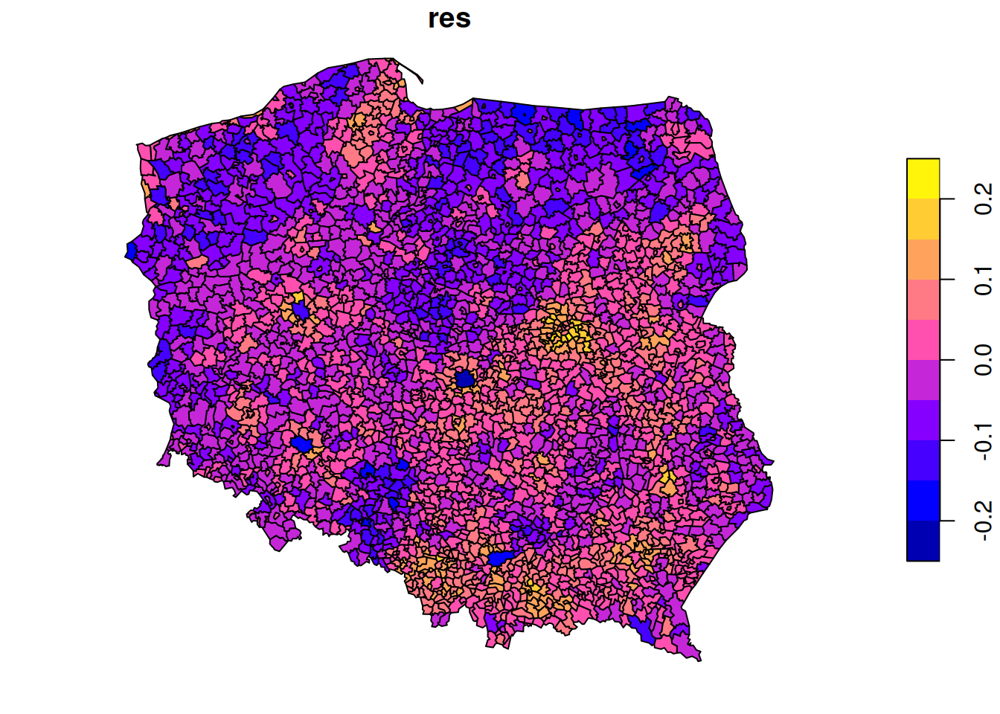

ev <- Sys.getenv("USER") == "edzer"5 Day 5: Learning goals
Understand
- what lattice data are, and which concepts, tools and models are used to analyse them
- how big big datasets are, or can be
- the difference between big vector and raster datasets, and datacubes
- how to find data in complex programs
- how to work with big data: download, or compute in the cloud near the data?
Reading materials
From Spatial Data Science: with applications in R:
- Chapter 14-17: Lattice data analysis
- Chapter 9: Large data and cloud native
5.1 Exercises for Today
- Exercises of Ch 9: Big Data and Cloud Native
Summary
- What is big?
- Raster or vector?
- How to access large data sets?
- Spatial statistics on large datasets
5.2 Analysing lattice data: neighbours, weights, models
library(sf)
# Linking to GEOS 3.12.1, GDAL 3.8.4, PROJ 9.4.0; sf_use_s2() is TRUE
data(pol_pres15, package = "spDataLarge")
pol_pres15 |>
subset(select = c(TERYT, name, types)) |>
head()
# Simple feature collection with 6 features and 3 fields
# Geometry type: MULTIPOLYGON
# Dimension: XY
# Bounding box: xmin: 235000 ymin: 367000 xmax: 281000 ymax: 413000
# Projected CRS: ETRF2000-PL / CS92
# TERYT name types
# 1 020101 BOLESŁAWIEC Urban
# 2 020102 BOLESŁAWIEC Rural
# 3 020103 GROMADKA Rural
# 4 020104 NOWOGRODZIEC Urban/rural
# 5 020105 OSIECZNICA Rural
# 6 020106 WARTA BOLESŁAWIECKA Rural
# geometry
# 1 MULTIPOLYGON (((261089 3855...
# 2 MULTIPOLYGON (((254150 3837...
# 3 MULTIPOLYGON (((275346 3846...
# 4 MULTIPOLYGON (((251770 3770...
# 5 MULTIPOLYGON (((263424 4060...
# 6 MULTIPOLYGON (((267031 3870...
library(tmap, warn.conflicts = FALSE)
tm_shape(pol_pres15) + tm_fill("types")
We need to make the geometries valid first,
st_is_valid(pol_pres15) |> all()
# [1] FALSE
pol_pres15 <- st_make_valid(pol_pres15)
st_is_valid(pol_pres15) |> all()
# [1] TRUEFirst, we will consider polygons in relationship to their direct neighbours
Is the graph connected?
(nb_q |> n.comp.nb())$nc
# [1] 1par(mar = rep(0, 4))
pol_pres15 |>
st_geometry() |>
st_centroid(of_largest_polygon = TRUE) -> coords
plot(st_geometry(pol_pres15), border = 'grey')
plot(nb_q, coords = coords, add = TRUE, points = FALSE)
Alternative approaches to form neighbourhood matrices:
- based on distance
- based on triangulating points, for instance polygon centroids
- sphere of influence, a modification of triangulation
- include neighbours from neighbours
Weights matrices
Weight matrices are needed in analysis, they determine how observations (or residuals) are weighted in a regression model.
(nb_q |> nb2listw(style = "B") -> lw_q_B)
# Characteristics of weights list object:
# Neighbour list object:
# Number of regions: 2495
# Number of nonzero links: 14242
# Percentage nonzero weights: 0.229
# Average number of links: 5.71
#
# Weights style: B
# Weights constants summary:
# n nn S0 S1 S2
# B 2495 6225025 14242 28484 357280Spatial correlation: Moran’s I
Moran’s I is defined as
\[ I = \frac{n \sum_{(2)} w_{ij} z_i z_j}{S_0 \sum_{i=1}^{n} z_i^2} \] where \(x_i, i=1, \ldots, n\) are \(n\) observations on the numeric variable of interest, \(z_i = x_i - \bar{x}\), \(\bar{x} = \sum_{i=1}^{n} x_i / n\), \(\sum_{(2)} = \stackrel{\sum_{i=1}^{n} \sum_{j=1}^{n}}{i \neq j}\), \(w_{ij}\) are the spatial weights, and \(S_0 = \sum_{(2)} w_{ij}\).
We can compute it as
pol_pres15$I_turnout |>
moran.test(lw_q_B, randomisation = FALSE,
alternative = "two.sided")
#
# Moran I test under normality
#
# data: pol_pres15$I_turnout
# weights: lw_q_B
#
# Moran I statistic standard deviate = 58, p-value <2e-16
# alternative hypothesis: two.sided
# sample estimates:
# Moran I statistic Expectation Variance
# 0.691434 -0.000401 0.000140
plot(pol_pres15["I_turnout"])
summary(pol_pres15$I_entitled_to_vote)
# Min. 1st Qu. Median Mean 3rd Qu. Max.
# 1308 4026 6033 12221 10524 594643
(lm0 <- lm(I_turnout ~ I_entitled_to_vote, pol_pres15)) |> summary()
#
# Call:
# lm(formula = I_turnout ~ I_entitled_to_vote, data = pol_pres15)
#
# Residuals:
# Min 1Q Median 3Q Max
# -0.21352 -0.04387 -0.00092 0.04150 0.23611
#
# Coefficients:
# Estimate Std. Error t value Pr(>|t|)
# (Intercept) 4.39e-01 1.34e-03 328.1 <2e-16 ***
# I_entitled_to_vote 5.26e-07 4.18e-08 12.6 <2e-16 ***
# ---
# Signif. codes: 0 '***' 0.001 '**' 0.01 '*' 0.05 '.' 0.1 ' ' 1
#
# Residual standard error: 0.0618 on 2493 degrees of freedom
# Multiple R-squared: 0.0598, Adjusted R-squared: 0.0595
# F-statistic: 159 on 1 and 2493 DF, p-value: <2e-16
pol_pres15$res = residuals(lm0)
plot(pol_pres15["res"])
5.3 Big data: resource constraints in data science projects
Constraints concern the availability of:
- time (your time, time of team members)
- compute (pc’s, cluster, private cloud)
- money (e.g. to hire and/or (re)train people, or to rent public cloud infrastructure)
Public clouds provide:
- infinite (in practice) compute
- infinite (in practice) storage
but cost
- hard money to use (compute, storage, network/data access)
- people capacity to setup and maintain
There is no cloud!
it’s just someone else’s computer!
- which is true: the computers have a different shape, but are just like your laptop:
- they have a CPU, main memory, hard drive, possibly a GPU
- quite often you will find yourself on a virtual machine, which acts as a normal computer
- but see below: they have object storage!
5.4 What is a big dataset?
- What is big?
- too big to handle in main memory (with some copying) (Gb)
- too big to fit in memory (20 Gb)
- too big to download (Tb)
- too big to fit on the hard drive, or local file storage (10 Tb)
- too big to move (copy) to your institution (100 Tb - Pb)
Breakout session 1
Discuss:
- Have you used datasets obtained from cloud storage? For which case(s)?
- Have you used cloud processing? For which case(s)
5.5 R for big, tabular datasets
- In-memory solutions:
data.table,duckdb,polarsimprove speed (use indexes) - Out-of-memory solution:
DBIortidyverseviadbplyr, connect to- a local, on-disc database like MariaDB, PostgreSQL, or MySQL
- cloud-based databases like Google BigQuery, Snowflake,
5.6 Big geospatial
- Large vector datasets, examples:
- Large raster datasets, image collections and data cubes:
- Cloud solutions, cloud platforms, with platform lock-in:
- ArcGIS online
- Sentinel Hub
- Google Earth Engine
- Microsoft Planetary Computer
- Earth on Amazon (AWS US-west Oregon: COGS + STAC for S1 + S2)
- Copernicus Data Space Ecosystem (but has openEO: a fully open standard and open source software stack)
Clouds and object storage
Object storage abstracts away hard drives and file systems!
- e.g. S3 bucket (AWS/OpenStack):
- total size is unlimited
- maximum object size 5 Tb (AWS S3)
- idea: write once, read many times
- large objects: write piece-wise
- http range requests
- price depends on size, access speed, amount of requests
- tabular data: Parquet
- large data processing: collocate processing and storage
- avoid network between locations / data centers
- network inside a data center is fast / cheap
5.7 Access mechanism
- API:
- process: openEO cloud, openEO on CDSE,
- select, download, process: Climate Data Store
- find “assets” (files): STAC, stacindex
- partial reads of data cubes: variable, bounding box, strided (low resolution), time period
- vector tiles: pmtiles, flatgeobuf
Cloud-optimized, cloud-native geoospatial
- Cloud-optimized formats let you read sections of large, remote files using HTTP range requests
- examples: Cloud-optimized GeoTIFF (COG), GeoZarr, GeoParquet
- These are described in the Cloud-Optimized Geospatial Formats Guide
5.8 Examples openEO
Two video’s from me taken during the 2023 OpenGeoHub Summerschool, on the topic “Cloud-based analysis of Earth Observation data using openEO Platform, R and Python” can be found here:
5.9 Example rstac
Using Sentinel-2 COGs at AWS, and its stac:
library(rstac) # modified from the package docs:
s_obj = stac("https://earth-search.aws.element84.com/v1")
collections(s_obj) |> get_request()
# ###Collections
# - collections (9 item(s)):
# - sentinel-2-pre-c1-l2a
# - cop-dem-glo-30
# - naip
# - cop-dem-glo-90
# - landsat-c2-l2
# - sentinel-2-l2a
# - sentinel-2-l1c
# - sentinel-2-c1-l2a
# - sentinel-1-grd
# - field(s): collections, links, context
it_obj <- s_obj |>
stac_search(collections = "sentinel-2-l2a",
bbox = c(-47.02148, -17.35063, -42.53906, -12.98314),
datetime = "2022-02-12T00:00:00Z/2022-03-18T00:00:00Z",
limit = 1) |>
get_request()
it_obj
# ###Items
# - matched feature(s): 361
# - features (1 item(s) / 360 not fetched):
# - S2A_23KMA_20220317_0_L2A
# - assets:
# aot, aot-jp2, blue, blue-jp2, coastal, coastal-jp2, granule_metadata, green, green-jp2, nir, nir-jp2, nir08, nir08-jp2, nir09, nir09-jp2, red, red-jp2, rededge1, rededge1-jp2, rededge2, rededge2-jp2, rededge3, rededge3-jp2, scl, scl-jp2, swir16, swir16-jp2, swir22, swir22-jp2, thumbnail, tileinfo_metadata, visual, visual-jp2, wvp, wvp-jp2
# - item's fields:
# assets, bbox, collection, geometry, id, links, properties, stac_extensions, stac_version, typethen, download (here only one item):
download_items <- it_obj |>
assets_download(assets_name = "thumbnail", items_max = 1, overwrite = TRUE)and examine
library(sf)
tif = "sentinel-s2-l2a-cogs/23/K/MA/2022/3/S2A_23KMA_20220317_0_L2A/B04.tif"
gdal_utils("info", tif)
# Driver: GTiff/GeoTIFF
# Files: sentinel-s2-l2a-cogs/23/K/MA/2022/3/S2A_23KMA_20220317_0_L2A/B04.tif
# Size is 10980, 10980
# Coordinate System is:
# PROJCRS["WGS 84 / UTM zone 23S",
# BASEGEOGCRS["WGS 84",
# ENSEMBLE["World Geodetic System 1984 ensemble",
# MEMBER["World Geodetic System 1984 (Transit)"],
# MEMBER["World Geodetic System 1984 (G730)"],
# MEMBER["World Geodetic System 1984 (G873)"],
# MEMBER["World Geodetic System 1984 (G1150)"],
# MEMBER["World Geodetic System 1984 (G1674)"],
# MEMBER["World Geodetic System 1984 (G1762)"],
# MEMBER["World Geodetic System 1984 (G2139)"],
# ELLIPSOID["WGS 84",6378137,298.257223563,
# LENGTHUNIT["metre",1]],
# ENSEMBLEACCURACY[2.0]],
# PRIMEM["Greenwich",0,
# ANGLEUNIT["degree",0.0174532925199433]],
# ID["EPSG",4326]],
# CONVERSION["UTM zone 23S",
# METHOD["Transverse Mercator",
# ID["EPSG",9807]],
# PARAMETER["Latitude of natural origin",0,
# ANGLEUNIT["degree",0.0174532925199433],
# ID["EPSG",8801]],
# PARAMETER["Longitude of natural origin",-45,
# ANGLEUNIT["degree",0.0174532925199433],
# ID["EPSG",8802]],
# PARAMETER["Scale factor at natural origin",0.9996,
# SCALEUNIT["unity",1],
# ID["EPSG",8805]],
# PARAMETER["False easting",500000,
# LENGTHUNIT["metre",1],
# ID["EPSG",8806]],
# PARAMETER["False northing",10000000,
# LENGTHUNIT["metre",1],
# ID["EPSG",8807]]],
# CS[Cartesian,2],
# AXIS["(E)",east,
# ORDER[1],
# LENGTHUNIT["metre",1]],
# AXIS["(N)",north,
# ORDER[2],
# LENGTHUNIT["metre",1]],
# USAGE[
# SCOPE["Navigation and medium accuracy spatial referencing."],
# AREA["Between 48°W and 42°W, southern hemisphere between 80°S and equator, onshore and offshore. Brazil."],
# BBOX[-80,-48,0,-42]],
# ID["EPSG",32723]]
# Data axis to CRS axis mapping: 1,2
# Origin = (399960.000000000000000,8100040.000000000000000)
# Pixel Size = (10.000000000000000,-10.000000000000000)
# Metadata:
# AREA_OR_POINT=Area
# OVR_RESAMPLING_ALG=AVERAGE
# Image Structure Metadata:
# COMPRESSION=DEFLATE
# INTERLEAVE=BAND
# PREDICTOR=2
# Corner Coordinates:
# Upper Left ( 399960.000, 8100040.000) ( 45d56'26.60"W, 17d10'56.12"S)
# Lower Left ( 399960.000, 7990240.000) ( 45d56'45.24"W, 18d10'28.55"S)
# Upper Right ( 509760.000, 8100040.000) ( 44d54'29.58"W, 17d11' 3.94"S)
# Lower Right ( 509760.000, 7990240.000) ( 44d54'27.77"W, 18d10'36.85"S)
# Center ( 454860.000, 8045140.000) ( 45d25'32.30"W, 17d40'48.86"S)
# Band 1 Block=1024x1024 Type=UInt16, ColorInterp=Gray
# NoData Value=0
# Overviews: 5490x5490, 2745x2745, 1373x1373, 687x687
library(stars)
# Loading required package: abind
read_stars(tif) |> plot()
# downsample set to 8
Breakout session 2
Discuss:
- Have you used any cloud platforms for processing geospatial data?
- What is your position with respect to platform lock-in?
5.10 Further examples from r-spatial.org:
5.11 Examples /vsixxx
curl::curl_download(
"https://github.com/paleolimbot/geoarrow-data/releases/download/v0.0.1/nshn_water_line.gpkg",
"nshn_water_line.gpkg"
)(w <- read_sf("nshn_water_line.gpkg"))
# Simple feature collection with 483268 features and 33 fields
# Geometry type: MULTILINESTRING
# Dimension: XYZ
# Bounding box: xmin: 216000 ymin: 4790000 xmax: 782000 ymax: 5240000
# z_range: zmin: -41.7 zmax: 530
# Projected CRS: NAD83 / UTM zone 20N
# # A tibble: 483,268 × 34
# OBJECTID FEAT_CODE ZVALUE PLANLENGTH MINZ MAXZ LINE_CLASS
# <dbl> <chr> <dbl> <dbl> <dbl> <dbl> <int>
# 1 2 WACO20 0.2 280. 0.2 0.2 3
# 2 3 WACO20 0.2 185. 0.2 0.2 3
# 3 4 WACO20 0.2 179. 0.2 0.2 3
# 4 5 WACO20 0.2 1779. 0.2 0.2 3
# 5 6 WACO20 0.2 470. 0.2 0.2 3
# 6 7 WACO20 0.2 57.7 0.2 0.2 3
# # ℹ 483,262 more rows
# # ℹ 27 more variables: FLOWDIR <int>, LEVELPRIOR <int>,
# # LAKEID_1 <chr>, LAKENAME_1 <chr>, LAKEID_2 <chr>,
# # LAKENAME_2 <chr>, RIVID_1 <chr>, RIVNAME_1 <chr>,
# # RIVID_2 <chr>, RIVNAME_2 <chr>, MISCID_1 <chr>,
# # MISCNAME_1 <chr>, MISCID_2 <chr>, MISCNAME_2 <chr>,
# # MISCID_3 <chr>, MISCNAME_3 <chr>, MISCID_4 <chr>, …From https://github.com/microsoft/USBuildingFootprints downloaded Maine.geojson.zip, and read with
(m = read_sf("/vsizip/Maine.geojson.zip")) # /vsizip: indicates data source is a zipped file
# Simple feature collection with 758999 features and 2 fields
# Geometry type: POLYGON
# Dimension: XY
# Bounding box: xmin: -71.1 ymin: 43 xmax: -67 ymax: 47.5
# Geodetic CRS: WGS 84
# # A tibble: 758,999 × 3
# release capture_dates_range geometry
# <int> <chr> <POLYGON [°]>
# 1 1 "" ((-67 44.9, -67 44.9, -67 44.9, -67 4…
# 2 1 "" ((-67 44.9, -67 44.9, -67 44.9, -67 4…
# 3 1 "" ((-67 44.9, -67 44.9, -67 44.9, -67 4…
# 4 1 "" ((-67 44.9, -67 44.9, -67 44.9, -67 4…
# 5 1 "" ((-67 44.9, -67 44.9, -67 44.9, -67 4…
# 6 1 "" ((-67 44.9, -67 44.9, -67 44.9, -67 4…
# # ℹ 758,993 more rowsor read directly from github into R:
m = st_read("/vsizip/vsicurl/https://minedbuildings.z5.web.core.windows.net/legacy/usbuildings-v2/Maine.geojson.zip")
# /vsicurl: indicates data source is a URL5.12 “Simple” analysis on large datasets
- process full archives, compute in the cloud
- select subsets, download, process locally:
- spatial subset
- temporal subset
- sampled at lower resolution (spatially, temporally)
- aggregated (=processed?) to lower resolution
- in some disciplines (Earth Observation?) there seems to be a belief that processing at the full resolution is the only thing that produces real science
- there is surprisingly little literature on the loss of information when processing at lower resolution, e.g. when the goal is to create a curve of yearly deforestation over an area as large as Brazil
5.13 Spatial statistics on large datasets
Geostatistics
A key paper comparing different approaches is Heaton, Matthew J., Abhirup Datta, Andrew O. Finley, Reinhard Furrer, Joseph Guinness, Rajarshi Guhaniyogi, Florian Gerber, et al. 2018. “A Case Study Competition Among Methods for Analyzing Large Spatial Data.” Journal of Agricultural, Biological and Environmental Statistics, December. DOI.